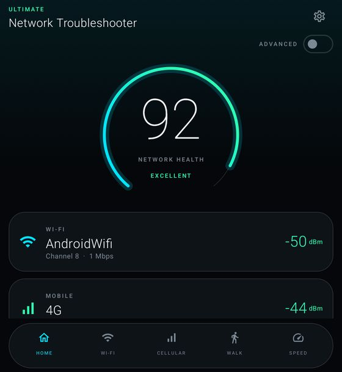
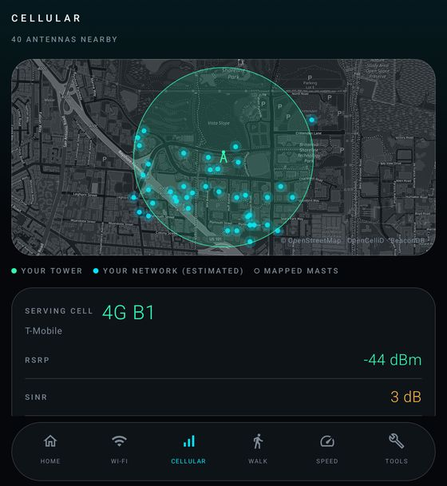
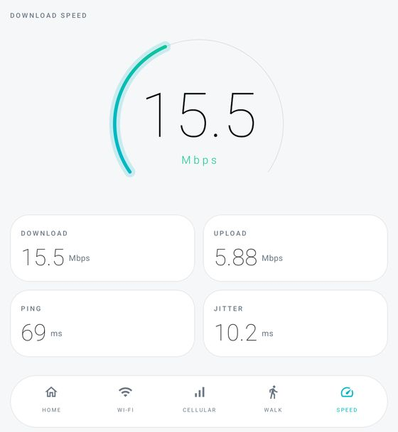

Ultimate Network Troubleshooter
WiFi analyzer, speed test, port scanner and more: the Swiss army knife for your network, on Android.
Free with one small banner ad. A one-time purchase removes it.
Ultimate Network Troubleshooter finds out what is wrong with your Wi-Fi, which channel is best, where mobile antennas are, how fast your connection really is and what is on your network. It starts simple, with a plain-language view, and has an Advanced switch for dBm, channel widths, cell IDs and raw details. There is no account, and what the app measures stays on your phone.

WiFi channel analyzer and network health score
See every nearby network on 2.4, 5 and 6 GHz, how much they overlap and which channel is best for your area, in plain words. The home screen turns your Wi-Fi and mobile signal into one network health score. Switch on Advanced for dBm, channel widths and raw details.

4G and 5G antenna map
See your serving cell with signal strength and quality, and the mobile antennas around you on a map. Positions come from OpenCelliD, BeaconDB and OpenStreetMap, so towers are estimates.

Speed test and walk-around WiFi heat map
Measure download, upload, ping and jitter against Cloudflare's public speed servers, or test against a public iPerf3 server. Walk mode lets you walk around your home or office and tap where you stand to build a signal heat map that shows the weak spots and the best channel for the whole house.

Network map and device scanner
Scan your network to list devices with their brand where Android allows it, and map everything from the internet down to each device, including every hop of the route. Save the map as a PDF or a draw.io file, and hide IP addresses and names before you share it. A full network report exports as an A4 PDF.

Port scanner and security checks
A TCP port scanner (common ports, 1-1024, or all in Advanced mode) explains in plain language what each open port means. The exposure check shows what the internet can reach on your network, and listening mode hears what devices announce without sending anything. Only scan networks you own or have permission to test.
More network tools
- Route map, ICMP and TCP ping, iPerf3 client and server
- DNS lookup, Whois, IP and provider lookup, website and certificate check
- Wake-on-LAN and subnet calculator
- Cloud and services check: about 40 services plus each provider's own status page, so you can tell a provider outage from your own connection
- Bluetooth scan for nearby devices, beacons and trackers
- App activity: timed scans that show which apps use mobile and Wi-Fi data, with a PDF report
Frequently asked questions
Is Ultimate Network Troubleshooter free?
Yes. It is free with one small banner ad. A one-time purchase removes the ad for good, with no subscription.
Why does it ask for location access?
Android requires precise location permission before any app may list nearby Wi-Fi networks and mobile antennas. The app uses it on your phone only. Bluetooth scanning needs the Nearby devices permission, and App activity needs Usage access, which is only requested if you use that tool.
Does the app upload my data?
There is no account and no analytics, and what the app measures stays on your phone. Some features contact public services only when you use them, for example OpenCelliD and BeaconDB for antenna positions and Cloudflare for the speed test. The privacy policy lists them all.
Can I see other people's traffic with it?
No. Android does not let apps capture other devices' traffic. The app shows what devices announce, what your own connection does and, with Usage access, how much data each app on your phone uses.
Is it legal to scan a network?
Only scan networks you own or have permission to test. The device and port scanners send packets to the hosts you choose.
Privacy policy · Support: kalmariumservices@gmail.com